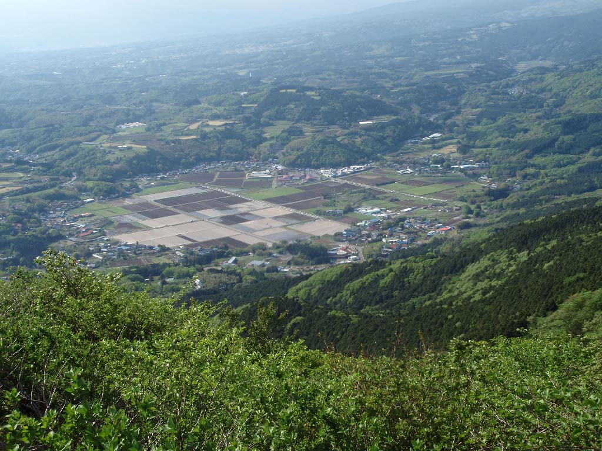

静岡県 函南町
トンネルの上は、牛乳の里。
丹那牛乳と、鉄道が変えた暮らし。
熱海と三島のあいだ。
窓が暗くなる、その上に、
こんな盆地が広がっています。
約3分で読む / 東海道新幹線沿線

写真：Batholith / Wikimedia Commons / Public Domain
東京方面熱海新丹那トンネルこの話の舞台は、その地上三島新大阪方面
いつも通る、その場所に
牛乳の「丹那」は、ここの名前。
「丹那牛乳」という名前を見かけたことはありますか。丹那は、静岡県函南町にある土地の名前。伊豆の山あいに広がるこの盆地は、酪農の里です。
東海道新幹線は、熱海と三島の間を新丹那トンネルで抜けていきます。車内から盆地を眺めることはできません。それでも私たちは、牛乳のふるさとの下を通っているのです。
そしてこの土地では、鉄道が
牛乳づくりの歴史にも関わっていました。
地上と地下を、重ねてみる位置関係の模式図
暮らしが変わった理由
トンネルへ抜けた水。地上に残された課題。
新幹線が走り始めるより前のこと。丹那では、酪農とともに、水を使う稲作やワサビ栽培も営まれていました。
ところが、東海道本線の丹那トンネル工事で、大量の地下水がトンネルへ流れ出します。地上は渇水に見舞われ、農家は、それまでと同じように作物を育てることが難しくなりました。
地域は渇水への補償を受け、農業の軸を酪農へ移していきます。牛乳の里の歩みには、鉄道の難工事と、暮らしを立て直す人々の選択がありました。[1]
次に手にする一本に、この土地を思う。
丹那牛乳を見かけたら、パックの名前から、あの盆地を思い出す。熱海と三島の間で窓が暗くなったら、地上の暮らしを想像する。
降りたことのない場所でも、知っている牛乳から、近くなることがあります。
この話の出典・写真について
- 伊豆半島ジオパーク「酪農王国オラッチェ」 — 丹那トンネル工事による渇水、稲作・ワサビ栽培から酪農への転換。
- 丹那牛乳「140年の歴史」 — 1881年からの酪農、大正末期の農業転換、1955年の工場開設。
- 函南町「新かんなみ～る」（PDF） — 地形・地下水と丹那の暮らし。
- Batholith「Tanna Basin 01」 — 2010年5月12日撮影、Public Domain。玄岳からの写真で、車内からの眺めではありません。

2026年10月11日に出典を確認した読み物の試作。図は編集部作成の模式図です。